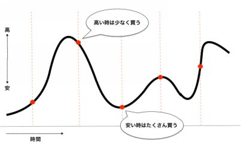

| 「ビットコインって何？」今さら聞けないお父さんのための仮想通貨講座とノーリスク資金調達法: ビットコインの意味すらわからない！そんなお父さんのために仮想通貨の基礎の基礎をわかりやすく解説！さらにはパソコン一台でまったくのノーリスクで初期投資費用を捻出する方法まで教えます！ (テンプル出版) | |
| 寺田茂樹 | |
| UNKNOWN (2018) | |
こんにちは、本書の著者の寺田茂樹と申します。
この度は本書を手に取っていただき誠にありがとうございます。
本書では、「いまさら聞けない仮想通貨の基礎の基礎」、「これから仮想通貨を始める方におすすめの投資法」、「誰にでもできる仮想通貨投資のためのノーリスク資金調達法」の3点を中心にお届けいたします。
2017年あたりから、テレビや雑誌などのメディアでも「ビットコイン」や「仮想通貨」という言葉をよく目にすることが多くなりました。
芸能人などを大々的にCMに起用するなど、その言葉を聞かない日はないくらい連日話題になっています。
このように仮想通貨市場は今まさに成長期であり、今後多くの人がこの市場に参入することが予想されます。
すでに参入されている人の中には元手の資金を100倍以上に増やしている人や、「億万長者」と呼ばれるくらいに一財産を築いた人もいます。
このように投資としての魅力もありますが、仮想通貨はその仕組みや技術じたいが革命的で、「インターネット革命」に続く世界のシステムを大きく変える革命だとも言われています。
これだけ注目されている仮想通貨ですが、実際にビットコインや仮想通貨を保有している人はまだまだごく少数派で、2017年後半の時点での保有者は5％にも満たないくらいです。
つまりは、まだまだ世の中的には「ビットコインって何？」という方のほうが多いのが実情ではないかと思われます。
そんな方のために仮想通貨、ビットコインの基礎知識についてお話していきます。
仮想通貨はそれこそ世界中に1000種類以上あると言われています。
仮想通貨をざっくりと説明すると、いわゆる電子マネーのようなものです。
電子マネーとは「Suica」や「楽天Edy」などのコンビニや百貨店で使える電子のお金です。
仮想通貨は世界共通で使える電子マネーのことだと思っていただければよろしいかと思います（正確には若干違う部分もありますが）。
本来、「仮想通貨」という呼称はこれら電子マネーの総称になります。
その中でもビットコインを始めとした、ブロックチェーンと呼ばれる技術を応用して取引されるものを「暗号通貨」と呼びます（ブロックチェーンについては後述します）。
日本では「仮想通貨」という呼び方のほうが一般的になっていますので、本書では「仮想通貨＝暗号通貨」という認識でお話します。
で、その中でももっとも主要な仮想通貨が「ビットコイン」です。
つまりビットコインとは、数ある仮想通貨の中でも中心的存在となる通貨です。
旅行などで海外に行った場合、買い物するときは日本円と現地の通貨を両替しなくてはいけませんよね？
しかし、仮想通貨が普及すれば両替の必要がなくなります。
また、海外に送金する場合も、現在では複数の金融機関を経由することで多額の手数料がかかりますし、送金完了までに数日程度の時間も要します。
しかし、仮想通貨を使えばかかる手数料はごくわずか、時間も数分から数時間程度で送金が行なえます。
実際、2017年以降、ビットコインが使える場所も急増しています。
ビッグカメラ、ヤマダ電機の家電量販店をはじめ、リクルート加盟店など26万店でビットコインでの決済が可能となっています。
さらには2020年の東京オリンピックに向けて外国人観光客が急増することも予想されていますし、クレジットカードよりも手数料が安く使いやすいことから、ますます仮想通貨、ビットコインに対応する店舗が増えていくことでしょう。
これから仮想通貨やビットコインを始めてみたい、そんな方がいちばん気になるのが「ビットコインって儲かるの？」ってことだと思います。
その前に、ビットコインの歴史について簡単に振り返ってみましょう。
ビットコインは2009年に初めて誕生しました。
当時は一部の関係者の間だけで使われており、1ビットコインは「0.002ドル」の価値しかなく、日本円に換算すると「0.2円」程度です。
その後、2011年頃から新技術に注目し始めた投資家たちの間で買われ始め、この頃の1ビットコインは「約1ドル」と言われており、日本円に換算すると「約110円」といったところでしょうか。
しかしたった1ドル程度だったビットコインが、その後巨大なチャイナマネーが投入されたことにより、2013年には1100ドルを越えるまでに一気に高騰しました。
もし「110円」で1ビットコインを購入していたならば、12万円にまでに値を上げたことになります。
その後、中国政府によるビットコインの規制やマウントゴックス取引所の破綻等により、仮想通貨市場は低迷期に入ります。
当時はまだまだ社会的な認知も信用度も低かったこともあり、この低迷は2015年後半まで続きますが、ちょうどそのころからビットコイン以外の通貨が次々と誕生しました。
ビットコイン以外の仮想通貨には、イーサリアムやリップルなどのいわゆる「アルトコイン」と呼ばれる仮想通貨があります。
アルトコインとは、そういう名称のコインが存在するわけではなく、ビットコイン以外のコインを総称した呼び方です。
アルトコインは1000種類以上あるとも言われており、上記のイーサリアム、リップル以外にも、比較的取引量が多いアルトコインとして、リスク、ネム、ライトコインなどが有名です。
すべてのアルトコインがビットコインのように取引ができるかというと、「流通量」の少ないコインは現実的に取引が難しいと言えます。
なので選択肢としては、イーサリアムやリップルなど取引量が多い（つまり人気が高い）アルトコインがトレードのメインとなってきます。
低迷が長く続いていたため、仮想通貨市場に新たに参入しようとする投資家は少数派だったわけですが、この低迷期にビットコインやアルトコインに投資していた人たちは、その後莫大な利益を得ることになります。
そして、2017年4月には「改正資金決済法」、俗にいう「仮想通貨法」が日本で施行されたことをきっかけに仮想通貨市場全体が大きく上昇し続け、ほとんどの仮想通貨が暴騰しました。
2017年はまさに「仮想通貨元年」となったわけです。
現在ではテレビCMや雑誌、メディアでも大々的に取り上げられていることが追い風となり、仮想通貨市場の過熱感は増すばかり、今後ますます参入者が増えることが予想されます。
これが一般的なビジネス市場であれば、参入者が増えればあっという間に「飽和」してしまいます。
ですが、仮想通貨市場は参入者が増えれば増えるほど価値がどんどん上昇し、得られる利益もどんどん上昇していきます。
さて、ではこの仮想通貨市場の上昇ははたしていつまで続くのでしょうか？
投資の市場には、仮想通貨以外にも株式、FX、先物などさまざまな投資市場が存在します。
そこで、現在の仮想通貨の市場規模と株式、FXの市場規模を比較したのがこちらです。
●世界の株式市場：7500兆円
●FX市場：120000兆円（12京円）
●仮想通貨市場：90兆円
今まさに急成長している仮想通貨市場ですが、それでも株式やFXと比べるとまだまだ黎明期であることがわかります。
本書の冒頭でも軽く触れましたが、日本でビットコインを保有しているのはまだほんの5％程度の人です。
仮想通貨が誕生してから10年も経っていないわけですが、現在の市場規模や保有している人の割合から考えると、まだまだとんでもないのびしろがあるように思いませんか？
参入者はこれからまだまだ激増することが予想されますし、そうであるならば一日でも早く参入すればするほど、より大きな利益への期待感は高まるばかりです。
仮想通貨の最大の特徴といえば、インターネット以来の革命的技術である 「ブロックチェーン」 の存在です。
日本でも三菱東京UFJ銀行がブロックチェーンの技術を導入するというニュースが話題になりましたので、一度くらいは耳にしたことがあるのではないでしょうか。
ブロックチェーンとは、トランザクションと呼ばれる取引データを、通常の銀行システムのように中央一括管理することなく、分散してみんなで管理するシステムです。
分散管理することから「分散型台帳」とも呼ばれています。
分散管理することの最大のメリットは、ハッキングなどの攻撃によってシステムが停止したり、データが改ざんされる可能性が極めて少なくなるという点です。
実はブロックチェーンにも複数の種類があります。ここではビットコインで使用されているオリジナルのブロックチェーンについて解説します。
ブロックチェーンには、「単一障害点」というものが存在しておらず、改ざんが極めて困難だという特徴があります。
それを実現しているのが「P2Pネットワーク」と呼ばれるもので、「ハッシュ値」というものを結びつけて構築する「ハッシュチェーン」と、「コンセンサスアルゴリズム」と呼ばれる確認作業によって、極めて改ざんが困難な唯一無二の台帳を分散して管理するシステムです。
さて、この解説ではいったい何のことだかちんぷんかんぷんですよね？
それではこれら一つ一つの用語について詳しく解説していきますね。
単一障害点とは、システムの稼働において絶対的な構成要素で、その要素が停止することでシステムそのものが成立しなくなる点のことを言います。
人間でいうところの「心臓」のようなものです。
ブロックチェーンには単一障害点が存在しないため、機能停止や改ざんなど外部からのリスクを極限にまで小さくすることができます。
P2Pとは、「Peer to Peer」の略称で、ネットワークに参加している者同士が対等な関係で情報の受け渡し合いをし、管理し合うシステムのことです。
従来からあるクライアント・サーバー型と呼ばれる中央一括管理システムでは、中央部が何らかの理由でトラブルを起こしたり、ハッキングされてしまうと機能停止せざるを得ません。
また、中央ですべての情報を管理しますので、ネットワークの参加者にとっては中央部が勝手に情報を操作しても知るすべがありません。
こういったデメリットを解消し、データの安全性の確保と対等関係での情報共有を可能にしたのがP2Pネットワークです。
ハッシュ値とは、仮想通貨の取引データを「ハッシュ関数」を使って暗号化（数値化）した値のことを言います。
例えば、「ビットコイン」という文字列をハッシュ関数に入力すると、
「a6b51279389bb33e4503837cd4f5da63」
といった値が返ってきます。
そしてこのハッシュ関数は、出力されたハッシュ値から元の値を推測することはできないという特徴があります。
また、ハッシュ値はたった一文字違うだけで全く違う値が吐き出されます。
例えば、「ビットコイン？」という文字列をハッシュ関数に入力すると、
「b2232d5ecdd563ae847f1a65bb0b4300」
といった値が返ってきます。
このように全く違う値が吐き出されることで、関連性を見いだせないようになっています。
そしてそのハッシュ値が正しいことを証明する「ナンス」という数値とともに、一つ一つの取引データを整合性のあるデータとして保管します。これを「ブロック」と呼びます。
このブロックは取引データの数だけ存在し、時系列で数珠のようにつながっています。これを「ブロックチェーン」とか「ハッシュチェーン」と呼びます。
コンセンサスアルゴリズムとは、ブロックチェーンのブロックが正当なものであるかどうか、つまりは改ざんがないかどうかを確認する作業のことを言います。
先ほど登場した「ナンス」は、ハッシュ値が正しいことを証明する数値＝暗号です。
ナンスはハッシュ値から逆算することは不可能で、正解が導き出されるまでひたすらハッシュ関数に代入する作業によって導き出します。
この計算は超高性能のコンピュータを使って、10分にも及ぶ数兆回以上の膨大な計算作業によって確認します。
ハッシュ値からナンスを導き出すだけでも相当な計算作業が必要となるのは前述のとおりです。
しかし、ブロックチェーンが強固と呼ばれる理由はそれだけではありません。
ブロックチェーンの各ブロック（取引データ）は、「１つ前のブロックのハッシュ値」とナンスとで構成されています。
そうなると、仮に一つのブロックがハッキング等によって改ざんされたとすると、すべてのブロックのハッシュ値とナンスの整合性が失われます。
つまり「完璧な改ざん」を行うには、すべてのブロックにおいてナンスを導き出す必要があるわけです。
実際に使われているハッシュ値は、
「000000000000000000b0ff40671100f019b724690a633ed9737a780bf098fc5e」
といった先頭に0が18個以上も並ぶような複雑な値が使われます。
このようなハッシュ値が得られるまでひたすらナンスを生成する作業は、高性能なコンピュータを使っても10分はかかります。
さらには新しいブロック（取引データ）は10分おきに生成されますから、それを上回るスピードで改ざんすることは事実上不可能というわけです。
ビットコインをはじめとした仮想通貨は、「取引所」と呼ばれる売買所に日本円を送金して、交換することで購入することができます。
なお、いま「取引所」と書きましたが、仮想通貨を買う方法としては、 「取引所」 を使う方法と 「販売所」 を使う方法の2種類があります。
それぞれの違い、メリット・デメリットについて簡単に説明します。
【取引所のメリット・デメリット】
仮想通貨を売りたい人と買いたい人とつなげて売買を成立させる、いわゆる株式相場やFX相場のようなところです。手数料が安いのが特徴ですが、素早く取引を成立させたい場合には不向きです。
【販売所のメリット・デメリット】
コインチェックやビットフライヤーといった、仮想通貨を取り扱っている販売元になります。すぐに売買できますが、手数料が高いのが特徴です。ですが、変動の激しい仮想通貨市場では販売所取引の方が確実に売買できるという意味では安心だとも言われています。
上記の違いを理解していないと、気づかないうちに「販売所」ばかり使って手数料を高く取られていた、なんて声もよく聞きます。
ちなみにどれくらい手数料に違いがあるのか、というと、実際に過去の例でみていただくとよくわかります。
ある時の「販売所」での価格が1ビットコイン＝953,441円に対し、「取引所」では1ビットコイン＝926,123円でした。
その差は27,318円です。
手数料のことを知っていないと、いかに損してしまうかがわかるかと思います。
しかし、「取引所」形式のほうがダンゼン有利かというと、実はそうとも言い切れない部分もあります。
というのも、仮想通貨市場の特徴として「相場の乱高下が激しい」というのがあります。
保有していたコインが急落してすぐに売りたいときや、逆に狙っていたコインが値下がりしてすぐ買いたいときには、「販売所」形式のほうが素早く決済ができます。
売りそびれて思わず損失を拡げてしまったり、せっかくのチャンスを逃すことも防げます。
ですので、仮想通貨の取引で「取引所」を使うのか、「販売所」を使うのかは、総合的に判断するようにしてください。
仮想通貨の取引はなるべく複数の取引所に分散させるべきです。
最低でも３つの取引所で口座を開設し、取引ができる状態にしておくのがおすすめです。
理由としては、下記の３つです。
●リスク分散につながる
●取引所によって取り扱うコインが違う
●取引所によって手数料が違う
それらを踏まえたうえで、初心者の方にもおすすめの取引所を3つ紹介します。
bitbank（ビットバンク）はこちら→ https :// bitbank . cc /
bitbank（ビットバンク）の特徴は、取り扱うコインの種類が多い、手数料が安い、セキリュティが強いなどが挙げられます。
国内の他の取引所は、アルトコイン（ビットコイン以外の仮想通貨）は「販売所」形式を取っていることが多く、手数料も高めです。
その点、bitbank（ビットバンク）はビットコインだけでなくアルトコインも「取引所」形式で取引できますから、手数料が格安です。
さらには国内トップクラスのセキュリティ体制がしかれていますので、安心して取引ができます。
Zaif(ザイフ)はこちら→ https :// zaif . jp /? lang = ja
Zaif(ザイフ)の特徴は、積立投資ができる、手数料が安い（マイナス手数料＝つまり取引をするほどお金がもらえる）、セキュリティが強いなどが挙げられます。
bitbank（ビットバンク）同様、アルトコインも「取引所」形式で取引ができます。
さらに自動でローリスクな積立投資ができるのが、Zaif(ザイフ)の最大のメリットであり特徴です（積立投資についてはのちほど詳しく触れます）。
bitFlyer（ビットフライヤー）はこちら→ https :// bitflyer . com / ja - jp /
bitFlyer（ビットフライヤー）の特徴は国内最大の取引所という安心感ですね。
多くの人が使っているということは、それだけセキリュティがしっかりしている証拠です。
そして、bitFlyer（ビットフライヤー）の最大のメリットは、買い物をするとビットコインがタダでもらえるってところです。
例えば、じゃらんで旅の予約をしたり、ZOZOTOWNで洋服を買い物したり、イオンショップで食材を買ったり、他にもクレジットカードの発行でビットコインをもらうことができます。
「ビットコインってよくわからない」、「高くて手が出せない」、そんな人も多いかと思いますので、まずはbitFlyer（ビットフライヤー）経由で買い物をしてビットコインを無料でもらってみてはいかがでしょうか？
一つ一つの買い物で貯まるビットコインは数百円から1000円程度ですが、ビットコインは将来的にまだまだ右肩上がりで上昇すると予想されています。
そうであれば無料でもらった1000円分のビットコインでも、2000円、3000円と値を上げるかもしれません。
数年単位で長期に保有することで、びっくりする価格になることも十分可能性があります。
初心者は自動積立投資を活用してドルコスト平均法で積み立てるのがおすすめです。
ビットコインやアルトコインは価格の乱高下が激しいという特徴があります。
それゆえにリスクの高さもありますが、その分リターンが大きいのも仮想通貨取引の魅力の一つです。
しかし、初心者がハイリスクを取ってまでハイリターンを得ようとするのは危険です。
そこでおすすめしたのが、価格変動のリスクをなるべく抑えた「積立投資法」です。
積立投資法とは、毎月1万円なら1万円分の仮想通貨を毎月決まった日に自動で積み立てていく投資法です。
「月に1万円程度ではたいして増えないのでは？」と思われるかもしれませんが、そんなことはありません。
20ヶ月間に渡って月1万円ずつ積立投資を始めた人で、資金が1000万円を超えるまでに増えた人の例もあります。
つまり、毎月コツコツと積み立てながらも市場の高騰も手伝って、20万円の元手が1000万円に化けたってことです。
仮想通貨は2018年現在において急激な右肩上がりのトレンドを形成していますし、今後ますます加速していくことが予想されます。
もし今まとまった資金がなくても、月に1万円程度でいいので積立投資することで、先ほどの例のように大きく資金を増やせる可能性があります。
これは急成長している仮想通貨市場ならではの恩恵と言えます。
先ほど、初心者におすすめの取引所ということで、bitbank（ビットバンク）、Zaif（ザイフ）、bitFlyer（ビットフライヤー）を紹介しましたが、自動積立投資に対応しているのはZaif（ザイフ）です。
「ビットコインに興味があるけど、取引所でのやり取りが面倒だったり、どのタイミングで買ったらいいのかわからない。」
「将来性を感じるので少しづつ積立したい。」
そういう方におすすめなのが「Zaifコイン積立」です。
Zaifコイン積立は自身の銀行口座から毎月固定額を自動で引き落とし、コインを買い付けて積立してくれます。
買い付けの日にちと金額だけ決めておけば、あとはすべて自動で行われるため、買い付けのタイミングをはかることも、注文の作業をすることすらもありません。
「毎月決まった額を決まった日に自動で積み立てる」という投資法をドルコスト平均法といいますが、ドルコスト平均法を行うことで、乱高下の激しい仮想通貨市場におけるリスク分散ができます。

仮想通貨は、とにかく乱高下が激しい市場というのはこれまでも述べたとおりです。
1日に10～20％変動することも珍しくありません。
もし大きく下がったときに買うことができたら、その後の上昇で美味しい思いができます。
しかし、上級者でもない限り、底を見極めるのはとても難しく、「まだまだ下がるかも・・・」なんて考えているうちにタイミングを逃しかねません。
そんなときに自動積立の設定をしておけば、機械的に買い付けを入れることができます。
1回あたりの投資額を固定（例えば1万円）することで、大きく値を下げたときは多めに購入できますし、逆に値を上げたときは少なく購入することになります。
このようにして、リスクを分散しながら確実に資産を積み上げていく投資法こそがドルコスト平均法の最大のメリットです。
リスクを極力抑えながらも完全放置で資産形成ができますから、初心者にはおすすめの投資法になります。
ちなみに、積立金額は最低1000円から可能ですから、お手軽に取り組めます。
ビットコインだけでなく、イーサリアム、モナコイン、ネムなどのアルトコインを組み合わせて積み立てることもできます。
仮想通貨ビギナーの方は、まずはリスクを抑えて積立投資からチャレンジしてみてはいかがでしょうか？
さて、ここまでビットコインの初心者向けに、仮想通貨の基本のお話をしてきました。
そして、まずは取引所を開設してみましょうというお話をしてきました。
また、リスクを抑えた投資法についてもお話してきました。
それでもまだ、初めてビットコインを購入する方にとっては恐怖感があるかと思います。
いくら仮想通貨が右肩上がりにぐんぐん上がっていると言っても、あくまでも投資ですからこの先何があるのかわかりません。
もしかしたら、自分が買ったとたんに暴落、なんてことが絶対にありえないとは言い切れません。
だからこそ、投資は余剰資金でやるべきなんですが、誰しもそんなに余剰資金があるわけではないでしょう。
そこで私がおすすめするのが「ノーリスク資金調達法」です。
つまり、ビットコインに投資する余剰資金を、ノーリスクで調達してしまいましょうという話です。
「ノーリスクで資金調達ってどういうこと？」、「そんなことが本当にできるの？」、「いったいどんな方法なの？」
ズバリその方法とは、 「自己アフィリエイト」 という方法です。
もしかしたら初めて聞かれる言葉かもしれませんが、この自己アフィリエイトという方法を使えば、数万円～十数万円程度の資金調達が全くのノーリスクでできてしまうんです。
では、詳しくお話していきますね。
自己アフィリエイトの前に、そもそも「アフィリエイト」とは何なのか？について解説します。
アフィリエイトとは、インターネット上での広告代理業のことで、ネット上でショップを運営している会社の商品を代行して販売するかわりに、代行手数料を受け取るネットビジネスです。
ちょっとわかりにくいですかね？ではもう少し具体的に説明しますね。
自分の作ったサイトに「バナー広告」と呼ばれる商品広告を貼り付けておいて、サイトに訪問した人がこの「バナー広告」をクリックすると、その商品の販売ページに誘導されます。
そしてその人がその販売サイトで商品を購入した場合に、代行手数料として報酬が支払われるといった仕組みです。
例えば、あなたがダイエットに関するサイトを運営していたとしますよね。
そのサイトでいま話題のダイエットサプリメントなどを紹介します。
そのときにダイエットサプリメントの「バナー広告」をサイトに貼りつけておきます。
あなたのサイトに訪問した人がそのダイエットサプリメントに興味を持ち、バナー広告をクリックしてサプリメントを購入すれば、あなたに代行手数料、つまりはアフィリエイト報酬が支払われるってわけです。
このように、アフィリエイトは基本的に自分が運営するサイトなどで商品を紹介し、サイトを訪れた第三者がその商品を購入することで報酬が発生する仕組みです。
ですので通常は自らが自サイトで商品を購入しても報酬は発生しません。
ところが、商品によっては自らが購入することで報酬を受け取ることができます。
しかもわざわざ自分のサイトを立ち上げる必要もありません。
金額はそれぞれの商品によって異なりますが、中には購入代金以上の報酬が受け取れる商品もあります。
「購入代金以上の報酬が受け取れる？！そんなまさか！」
って思われたかもしれません。ですがこれはすべて事実なんですよ。
このキャッシュバックシステムこそが、インターネットで欲しい商品をお買い物しながら、同時にお小遣い稼ぎもできる「自己アフィリエイト」と呼ばれる仕組みです。
それでは「自己アフィエイト」についてさらに詳しく解説していきますね。
自己アフィリエイトでキャッシュバック（報酬）を受けるためには、ASP（アフィリエイト・サービス・プロバイダー）と呼ばれる仲介会社に会員登録する必要があります。
会員登録と言っても無料でできますから安心してください。
ASP（仲介会社）は日本国内だけでも数十数百社とありますが、その中でも代表的なのがA8net.（エーハチネット）と呼ばれるASPです。
A8netはこちら → https :// www . a 8. net /
A8net.は業界でも最大手の老舗ASPです。
このA8net.に登録して行う自己アフィリエイトを、通称 「セルフバック」 と呼びます。
セルフバックでは、さまざまなジャンルのさまざまな商品でキャッシュバックを受けることができます。
例えば、サプリメントや青汁、食品、ファッション、旅行など多岐にわたります。
これらの商品を「セルフバック」経由で購入することで、現金キャッシュバックが受けられるのです。
実際のセルフバックのやり方、手順については、私が運営する「セルフバック解説サイト」にて図解で詳しく解説しております。
こちらのサイトを参考にしながら、ぜひセルフバックにチャレンジして現金キャッシュバックを体験してみてください。
セルフバック解説サイトはこちら→ http://temple3930.com/cashbacksite
そんな中でも、仮想通貨の資金調達にもっともおすすめのセルフバックが、「クレジットカード発行」と「FXなどの口座開設」です。
これらをおすすめする理由は下記の2点です。
☑お金を出して商品を買わなくても、無料でキャッシュバックが受けられる。
☑キャッシュバックの金額が高額なものが多い。
例えば、「三井住友ビジネスカード」の発行をセルフバック経由で申し込むと、最大18000円のキャッシュバックを受けることができます（2018年6月現在）。
それ以外のクレジットカードでも、どれも数千円～1万円以上といった高額のキャッシュバックを受け取ることができます。
もちろん、クレジットカードを作るのにお金はかかりませんので、無料でカードを作ってキャッシュバックが受けられます（カードによっては年会費がかかる場合があります）。
また、FXの口座開設も同様に高額なキャッシュバックを受けることができます。
例えば、「外為ジャパンFX」というFXの口座開設に申し込むと、15000円のキャッシュバックを受けられます（2018年6月現在）。
ただし、外為ジャパンFXの場合は「申込み後60日以内に１ロット以上の取引をすること」などの条件がついていますが、それにしても１回でいいので１ロットの取引を済ませれば15000円が手に入りますし、「ちょうどFXを始めてみたかった」という方であれば、まさに一石二鳥です。
もちろん、口座開設そのものは無料でできますよ。
これから仮想通貨を始めるのであれば、これらの無料かつ高額なキャッシュバックが受けられるセルフバックをフル活用して、ノーリスクで資金調達してみてくださいね。
「セルフバック解説サイト」でもご案内しておりますが、自己アフィリエイト（セルフバック）を使った効率的な資金稼ぎの方法として、 「たったの2時間で35,204円をノーリスクでゲットできるセルフバックマニュアル」 を限定プレゼントしております。
このセルフバックマニュアルでは、あなたにセルフバックの案件を探す手間を省いてもらうために、私のほうであらかじめ7つの案件を選定させていただきました。
あなたは2時間程度の簡単なパソコン作業で7つの案件に申し込むだけで、35,204円のキャッシュバックを受け取ることができます。
もちろんすべて無料で申し込めるものばかりですから、ご安心ください。
さらにはその7つの案件以外にも、私のおすすめの高額報酬案件を30件ほど選定させていただきました。
もしそれらすべてに申し込んだとすると、軽く10万円以上のキャッシュバックを受け取ることができます。
これだけの資金があれば、仮想通貨の初期投資費用としては十分かと思います。
ぜひこのマニュアルを活用して初期投資費用をノーリスクでゲットしてください。
マニュアルは下記のフォームからお申し込みいただけます。
お申込み用フォームはこちら→ https :// pcm 3. jp / p / r / k 0 BH 4 XqU
ご登録いただいたメールアドレスあてにマニュアルをお届けいたします。
※ご登録いただくと10分以内に「お届けメール」が届きますが、万が一届いていない場合は「迷惑メールフォルダ」に入っている可能性がありますので、一度ご確認ください。
※ご登録いただくと寺田の発行するメールマガジンに登録されます。メールマガジンではアフィリエイトに関する有益な情報をお届けしております。
※メールマガジンが不要の場合は解除フォームからいつでも解除できます。
私と同じアラフィフ世代の方ならよくご存知でしょうが、約30年前の日本にはバブルと呼ばれた時代がありました。
当時は日経平均株価が史上最高値を更新するなど、まさにお金がジャブジャブ有り余るそんな時代でした。
証券会社に就職した私の同級生などは、初年度のボーナスがいきなり100万円を超えていたほどです。
さすがに私にはそんな美味しい思い出はありませんが、それでもそれなりにバブルの恩恵にあずかった記憶があります。
しかしバブルはやがて崩壊し、長く続く不況の時代に突入しました。
時代は大きく変化し、サラリーマンにおける「年功序列」や「終身雇用」などはもはや存在せず、いまや昇給はおろか定年まで勤め続けることすら保証されていません。
少ない給料を補填するために副業を推奨する一部上場企業もあるくらいです。
つまりは昔のように会社や国に頼っていては生きていけない時代が到来した、ということです。
しかし、悪いことばかりではありません。
この10数年の間にインターネットが急速に普及したことにより、個人がネットでお金を稼ぐことが簡単にできるようになりました。
仮想通貨やアフィリエイトもそんなインターネットを活用したお金の稼ぎ方の一つです。
これからは会社や国に頼らずとも、インターネットを活用することで個人が自由に収入を得ることが当たり前にできる時代になったのです。
本書についても、あなたがネットで収入を得る際の一助になればいいな、という思いで執筆いたしました。もし少しでもお役に立てたのであれば幸いです。
最後までお読みいただきありがとうございました。
寺田茂樹
アラフィフの元サラリーマン。準公務員系の企業に20数年勤務し、サラリーマン時代は法律系の仕事に携わっていたが、もともとインターネットマーケティング、ネットでの集客・販売代行を得意としていたことから、サラリーマンを辞め独立起業する。
現在は、主に「インターネットマーケティング」「ネット集客・販売代行」「ネット集客コンサル」「デジタルコンテンツ制作・販売」などネット起業家として活動中。
自分自身がサラリーマンから個人起業家に転身した経緯があることから、同様に独立起業を目指す個人を支援する活動も行っている。
趣味は、読書、音楽（ハードロック）、早朝散歩。